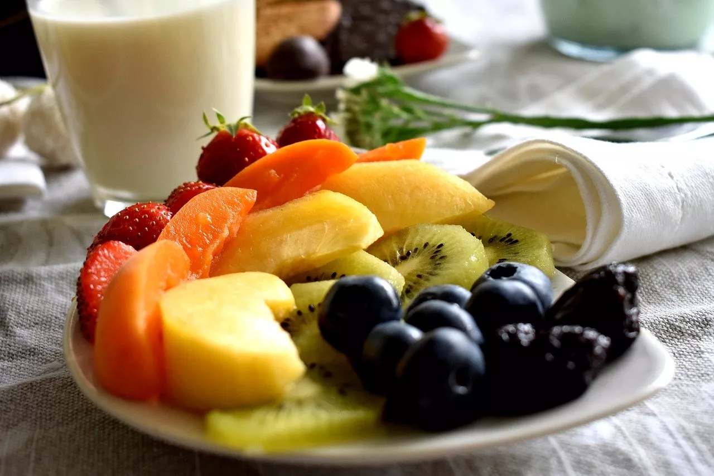
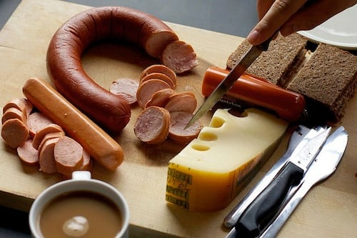
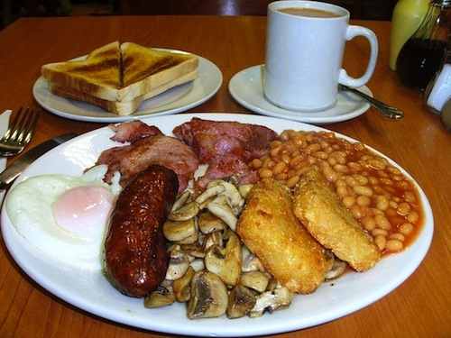

Colazioni nel mondo tra dolce e salato
Colazione Dolce

Hawaii:
Nient’altro che deliziosa frutta fresca. Possono arrichire la colazione anche con bagel.

Italia:
Capuccino e cornetto, oppure latte con cereali o biscotti. La colazione Italiana è sicuramente dolce.
Colazione Salata

Germania:
Wurstel, salsicce, e altre carni, affettati, formaggi, pane, panini, pretzel, anche frutta fresca, uova alla coque e marmellata.

Regno Unito:
English Breakfast a base di fagioli, salsicce, bacon, uova, funghi e toast. Il tutto ovviamente con la tazza di tè.
Colazione Mista

Stati Uniti d'America:
Ottimi pancake sormontati da sciroppo d’acero o confettura ai mirtilli, e ovviamente bacon e uova strapazzate.